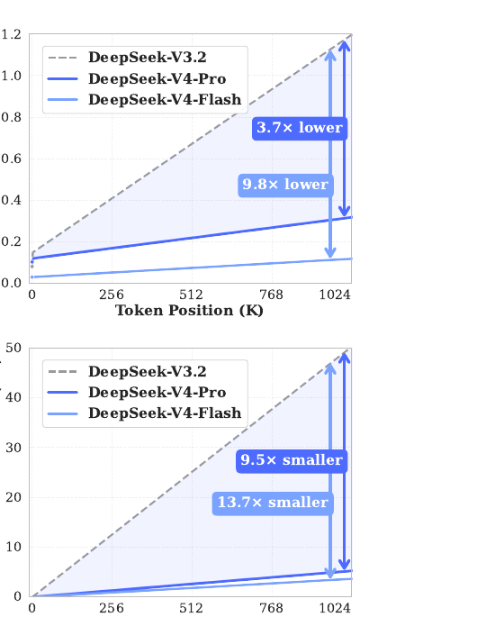
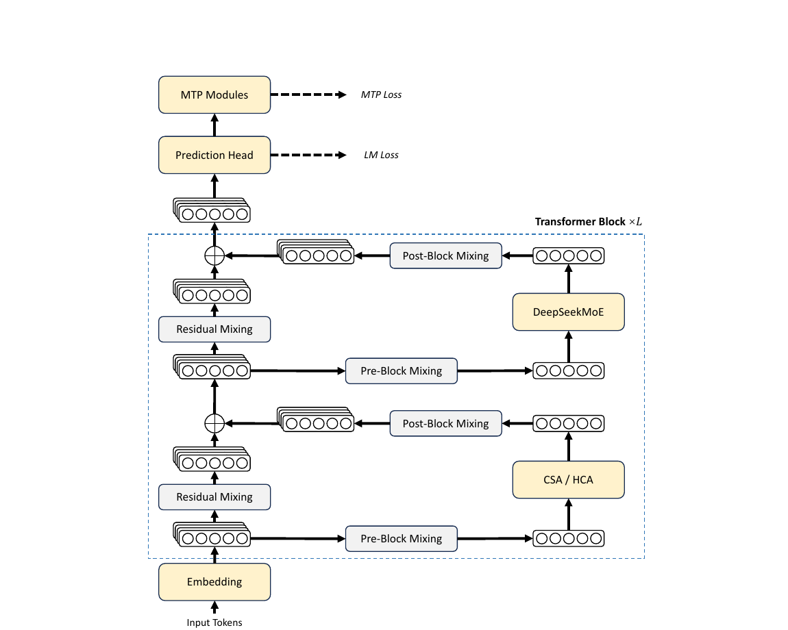
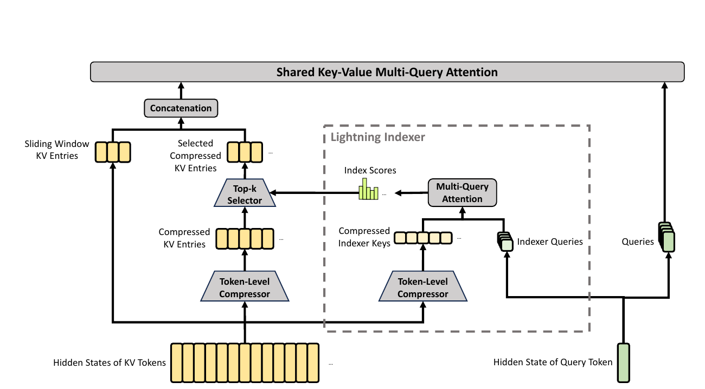
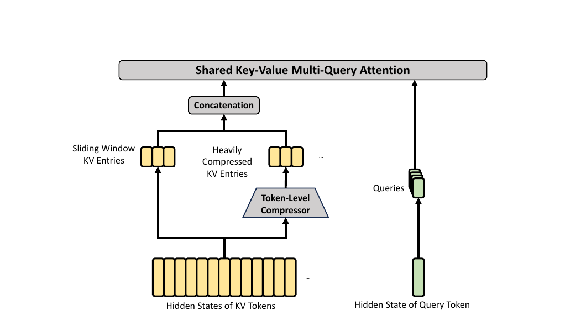
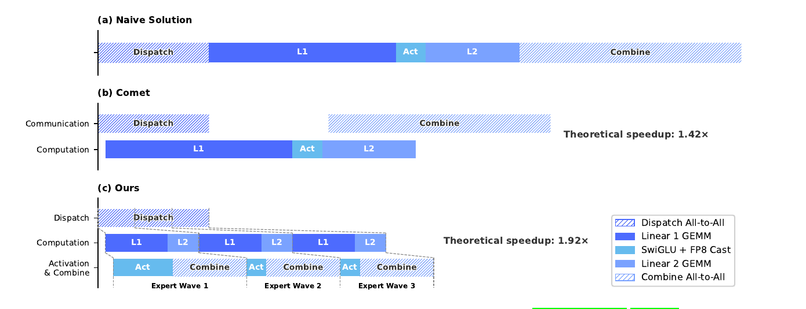
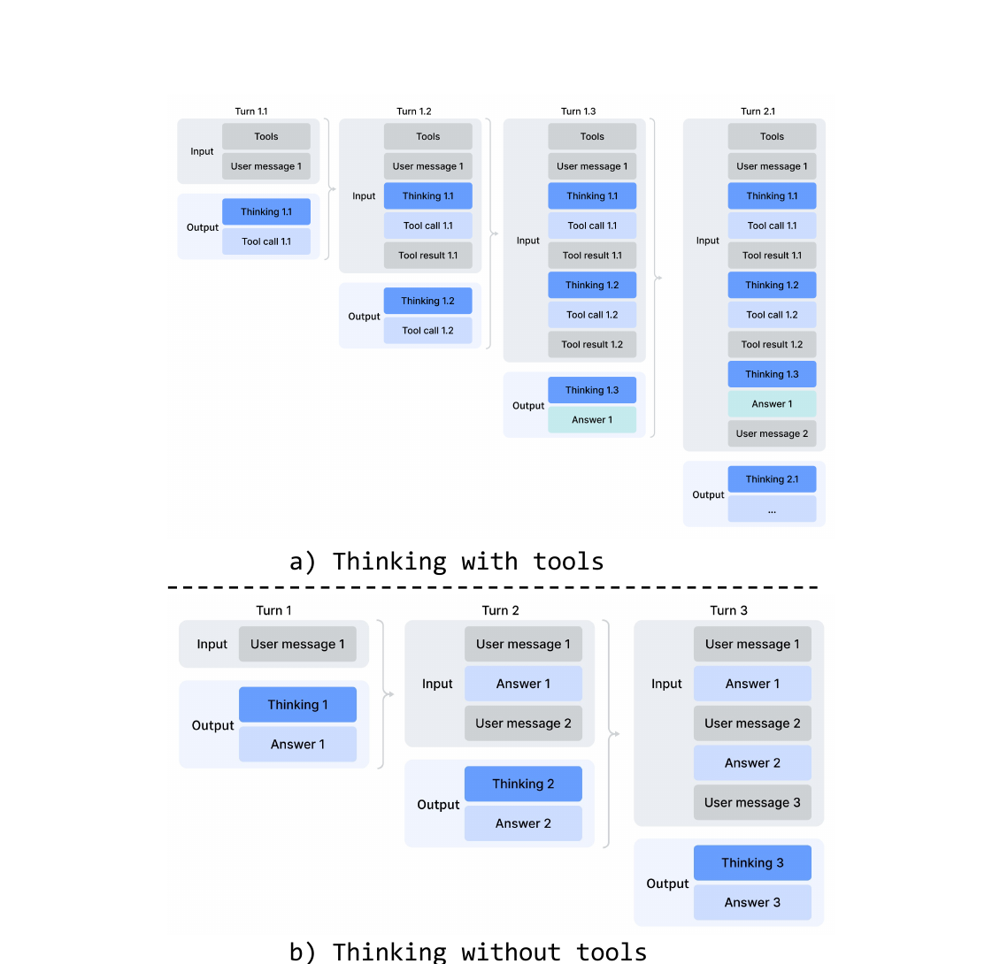
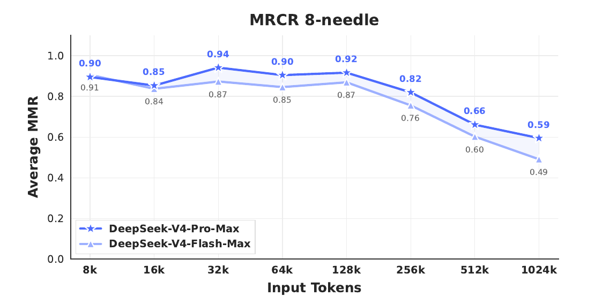
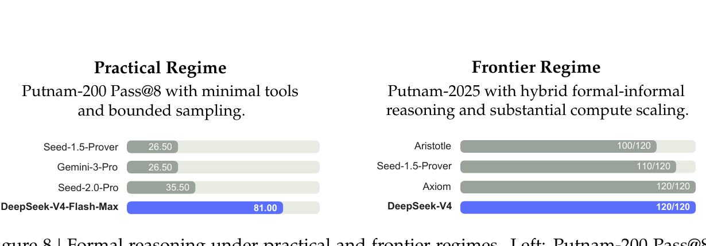
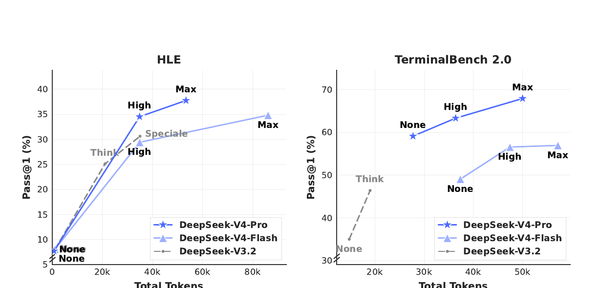

m tokens into single KV entries
before selection. Savings stack multiplicatively with DSA's.
| V4-Flash | V4-Pro | (V3.2 ref) | |
|---|---|---|---|
| total params | 284B | 1.6T | 671B |
| activated / token | 13B | 49B | 37B |
| transformer layers | 43 | 61 | — |
| hidden d | 4096 | 7168 | — |
| routed experts | 256 (top-6) | 384 (top-6) | — |
| pre-train tokens | 32T | 33T | — |
| context | 1M | 1M | 128K |
Flash efficient reasoning at smaller budget Pro flagship; "Pro-Max" = max reasoning effort
First two layers use pure sliding-window attention. The first three MoE layers use Hash routing instead of learned routing.


for each query token t, scores against all preceding keys:
w tokensm tokens → 1 entryV4 = compression + sparse selection + sliding window + attention sink, in two complementary regimes.
| year | method | idea in one line | arxiv |
|---|---|---|---|
| 2019 | Sparse Transformers (Child+) | fixed strided/factorized patterns, O(n√n) | 1904.10509 |
| 2020 | Reformer | LSH bucketed attention, O(n log n) | 2001.04451 |
| 2020 | Longformer / BigBird | sliding window + global tokens, linear cost | 2004.05150 · 2007.14062 |
| 2020 | Linformer / Performer / Linear T. | low-rank or kernel approximation of softmax | 2006.04768 · 2009.14794 · 2006.16236 |
| 2023 | RWKV / Mamba / Mamba-2 | recurrent / selective SSMs, constant state | 2305.13048 · 2312.00752 · 2405.21060 |
| 2024 | Attention Sink / StreamingLLM | keep first tokens to absorb attention mass | 2309.17453 |
| 2024 | MLA (DeepSeek-V2) | low-rank latent KV with decoupled RoPE | 2405.04434 |
| 2025 | NSA — Native Sparse Attention | compress + select + window, end-to-end trainable | 2502.11089 |
| 2025 | MiniMax-01 (Lightning Attn) | linear attention at 456B-MoE, 4M extrapolate | 2501.08313 |
| 2025 | DSA (DeepSeek-V3.2) | lightning indexer + top-k on top of MLA | 2512.02556 |
| 2026 | CSA + HCA (V4) | two interleaved compression regimes + indexer in FP4 | (this paper) |

−i on outputs to recover relative position after compression
Xl+1 = B·Xl + C·𝓕l(A·Xl)
Gt = ∇L(Wt-1)
Mt = μ Mt-1 + Gt
O't = HybridNewtonSchulz(μMt+Gt) # ≈ U VT from SVD
Ot = O't · √max(n,m) · γ
Wt = Wt-1(1 − ηλ) − η Ot

| benchmark | V3.2-Base (37B) | V4-Flash-Base (13B) | V4-Pro-Base (49B) |
|---|---|---|---|
| MMLU (5-shot) | 87.8 | 88.7 | 90.1 |
| MMLU-Pro | 65.5 | 68.3 | 73.5 |
| SimpleQA-verified | 28.3 | 30.1 | 55.2 |
| SuperGPQA | 45.0 | 46.5 | 53.9 |
| FACTS-Parametric | 27.1 | 33.9 | 62.6 |
| HumanEval | 62.8 | 69.5 | 76.8 |
| GSM8K | 91.1 | 90.8 | 92.6 |
| MATH | 60.5 | 57.4 | 64.5 |
| LongBench-V2 | 40.2 | 44.7 | 51.5 |
Flash matches or beats V3.2 with ~1/3 the activated params; Pro raises every category, especially knowledge & long context.
| mode | use | format |
|---|---|---|
| non-think | routine, low-risk | </think> summary |
| think-high | complex, planning | <think>…</think> summary |
| think-max | frontier reasoning | + injected "be thorough" prompt |
API-surface convergence with OpenAI's reasoning_effort
and Anthropic's budget_tokens for extended thinking.
<|DSML|> XML format → fewer escape errors than JSON tool calls
Special tokens that reuse the existing KV cache for auxiliary tasks — no separate small model, no re-prefill:
<|action|> need search? ·
<|query|> gen query ·
<|authority|> need authoritative source? ·
<|domain|> classify ·
<|extracted_url|> / <|read_url|> ·
<|title|> conv title
| benchmark | Opus 4.6 Max | GPT-5.4 xHi | Gemini 3.1-Pro Hi | K2.6 | GLM-5.1 | DS-V4-Pro Max |
|---|---|---|---|---|---|---|
| MMLU-Pro | 89.1 | 87.5 | 91.0 | 87.1 | 86.0 | 87.5 |
| SimpleQA-verified | 46.2 | 45.3 | 75.6 | 36.9 | 38.1 | 57.9 |
| GPQA Diamond | 91.3 | 93.0 | 94.3 | 90.5 | 86.2 | 90.1 |
| HLE | 40.0 | 39.8 | 44.4 | 36.4 | 34.7 | 37.7 |
| LiveCodeBench | 88.8 | — | 91.7 | 89.6 | — | 93.5 |
| Codeforces (rating) | — | 3168 | 3052 | — | — | 3206 |
| Apex Shortlist | 85.9 | 78.1 | 89.1 | 75.5 | 72.4 | 90.2 |
| SWE-Verified | 80.8 | — | 80.6 | 80.2 | — | 80.6 |
| Terminal Bench 2.0 | 65.4 | 75.1 | 68.5 | 66.7 | 63.5 | 67.9 |
| BrowseComp | 83.7 | 82.7 | 85.9 | 83.2 | 79.3 | 83.4 |
| MRCR 1M | 92.9 | — | 76.3 | — | — | 83.5 |
SOTA among open models on knowledge. Lead on code/math (Codeforces 3206 ≈ rank-23 worldwide, LiveCodeBench, Apex). Trails Gemini-3.1-Pro on broad knowledge by ~3–6 months of progress.



huggingface.co/deepseek-ai/DeepSeek-V4-Pro<style id="theme-overrides"> on saveno overrides · matches base design system